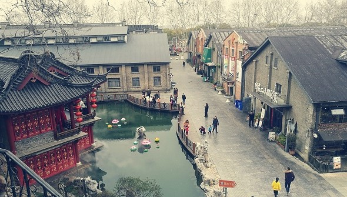
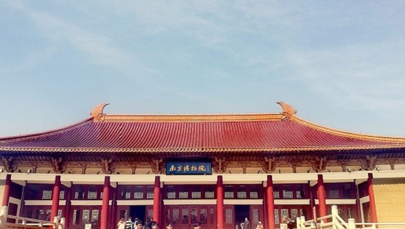
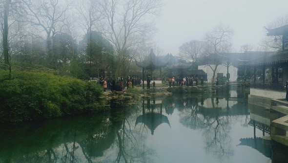
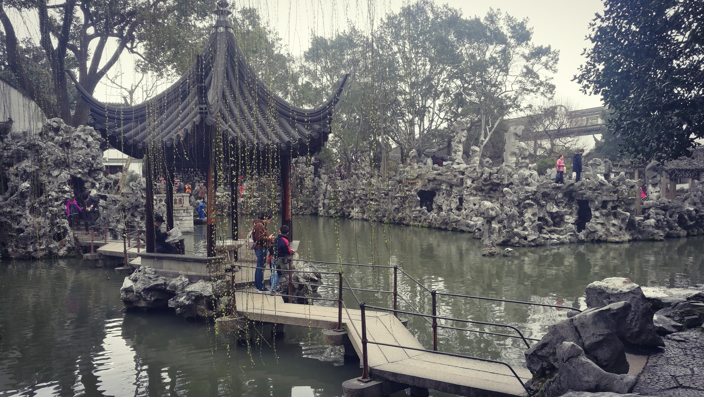

 沿坡而建的几道石门古色古香，门楣上历代名人的题字清晰可见，西边的小码头街仍保持着唐宋风韵，漫步在这条古老的街道上，似乎是在一座天然的历史博物馆内散步。 镇江·西津渡 Design / Illustrations / Typography
 一院六馆的格局，历史馆、特展馆、数字馆、艺术馆、非遗馆及民国馆，每个展馆都有它独特的风格。整个博物院的建筑是仿辽代宫殿式，细部和装饰采用了唐宋遗风，使整座博物院更显其深厚底蕴与壮观大气。 南京·博物院 Design / Illustrations / Typography
 在拙政园内游览，步移风景多变，就像漫步于诗情画意中。这里的每一座亭台就是一首诗，每一个水榭就是一幅画，每一个建筑都是文学和美学的完美结合。 苏州·拙政园 Design / Illustrations / Typography
 之所以叫狮子林，是因为园内“林有竹万，竹下多怪石，状如狻猊（狮子）者"，而且天如禅师惟则得法于浙江天目山狮子岩普应国师中峰，所以取佛经中狮子座之意取名“狮子林”。 苏州·狮子林 Design / introduction / Typography
坐在海边，看着潮起潮落，看着太阳升起，夕阳西下。放眼望去，蓝色的大海远远无垠，海面从岸边一直向前延申，和天空接在了一起。 厦门·海滩 Design / Illustrations / Typography